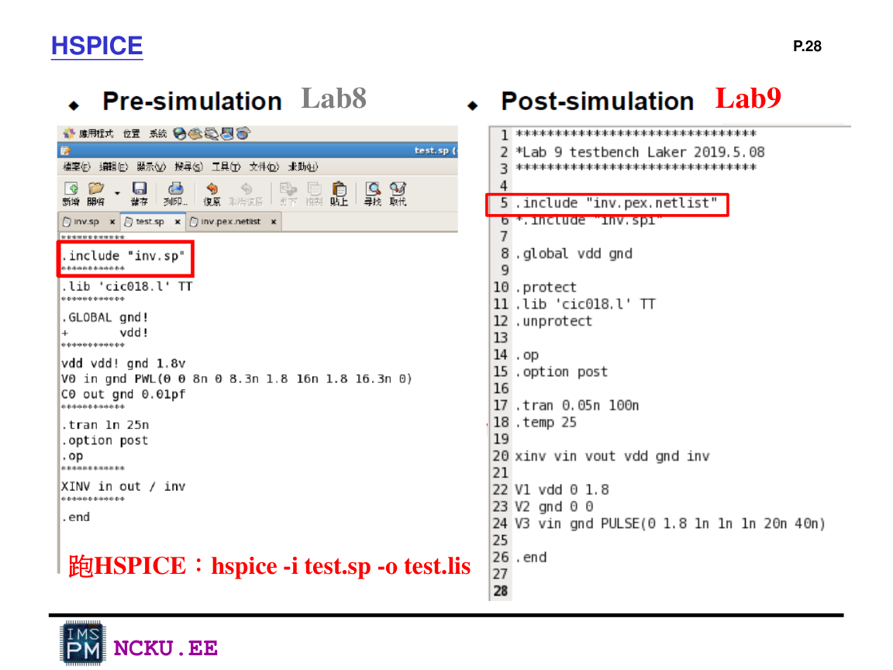

Post-sim、WaveView 與 input/output 說明
post-sim 是把 PEX 產生的寄生 netlist 放進 HSPICE 模擬。它的輸入與 Lab8 pre-sim 類似，但電路來源改成 layout extraction 後的 netlist。
Post-sim 流程
PEX netlist
→
修改 pin order
→
testbench include
→
HSPICE
→
WaveView
→
比較 pre/post

Lab9_Laker p.28：Lab8 pre-sim include 原 spi；Lab9 post-sim include PEX netlist，並用 hspice -i test.sp -o test.lis
Input / Output 規格
| 訊號 | 用途 | 建議 PULSE / 判斷 |
|---|---|---|
| A | NAND input 1 | PULSE(0 1.8 0 0.1n 0.1n 20n 40n) |
| B | NAND input 2 | PULSE(0 1.8 0 0.1n 0.1n 40n 80n) |
| out_2 | NAND output | 只有 A=1 且 B=1 時為 0，其餘為 1 |
| 訊號 | 用途 | 建議 PULSE / 判斷 |
|---|---|---|
| C | NOR input 1 | PULSE(0 1.8 0 0.1n 0.1n 20n 40n) |
| D | NOR input 2 | PULSE(0 1.8 0 0.1n 0.1n 40n 80n) |
| out_3 | NOR output | 只有 C=0 且 D=0 時為 1，其餘為 0 |
Post-sim testbench 範例
下面以 NAND 為例。實際檔名、subckt 名稱與 pin order 必須依你的 PEX 輸出調整。
* Example post-sim testbench. Modify include file and subckt pin order according to PEX output.
.INC 'NAND.pex.netlist'
.GLOBAL gnd
+ vdd
.protect
.lib 'cic018.l' TT
.unprotect
.op
.options post
.tran 0.05n 160n
.temp 25
VDD vdd gnd DC 1.8v
VGND gnd gnd DC 0v
VA A gnd PULSE(0 1.8 0 0.1n 0.1n 20n 40n)
VB B gnd PULSE(0 1.8 0 0.1n 0.1n 40n 80n)
* The final name and pin order must match the PEX subckt declaration.
XNAND A B out_2 vdd gnd nand
.end
HSPICE 執行
hspice -i test_nand_post.sp -o nand_post.lis
wv &Pre-sim 與 Post-sim 比較怎麼寫？
功能是否相同
先說明 pre-sim 與 post-sim 的邏輯結果是否都符合 NAND / NOR 真值表。若 out 在相同 input combination 下都得到相同高低電位，表示功能一致。
延遲可能變大
post-sim 加入 layout 寄生電阻與電容，輸出切換邊緣可能較慢，rise time / fall time 或 propagation delay 可能比 pre-sim 大。
波形邊緣更真實
pre-sim 是理想 schematic netlist；post-sim 更接近 layout 後的真實電路，因此波形可能比較不理想，但更接近實際晶片。
可直接放報告的比較文字範例
由 pre-sim 與 post-sim 波形比較可知，NAND / NOR 的輸入輸出邏輯關係皆符合真值表，因此 layout 電路在功能上與原本 schematic 設計一致。不過 post-sim 是使用 PEX 後的寄生 netlist 進行模擬，包含 layout 中金屬線、contact 與 diffusion 所造成的寄生電阻與寄生電容，因此輸出波形在轉態時可能出現較明顯的延遲，邊緣也可能比 pre-sim 更緩。這代表 post-sim 結果比 pre-sim 更接近實際晶片製作後的電路行為。